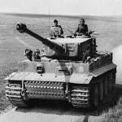

Pojazdy pancerne II wojny światowej
Zobacz jakie maszyny były wykorzystywane podczas starć pancernych. Opisy wraz z obrazami najpopularniejszych i najbardziej efektywych czołgów z lat wojennych.
Największe bitwy pancerne
Prześledź historię największych stalowych starć. Dokładne opisy przebiegu bitew.
Czytaj dalej »Ciekawostki
Największe maszyny stworzone w trakcie wojny, najbardziej skuteczni pancerni dowódcy.
Czytaj dalej »